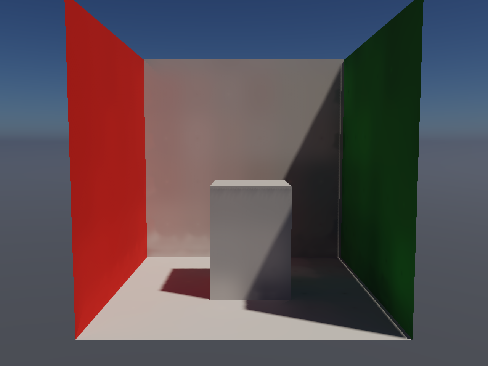
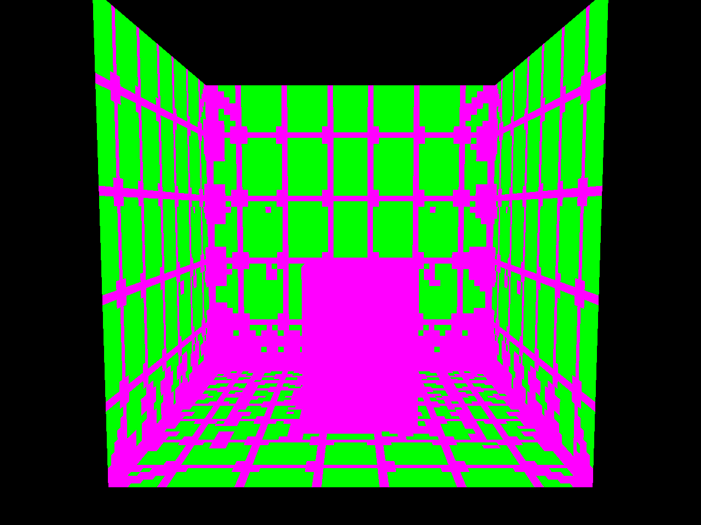
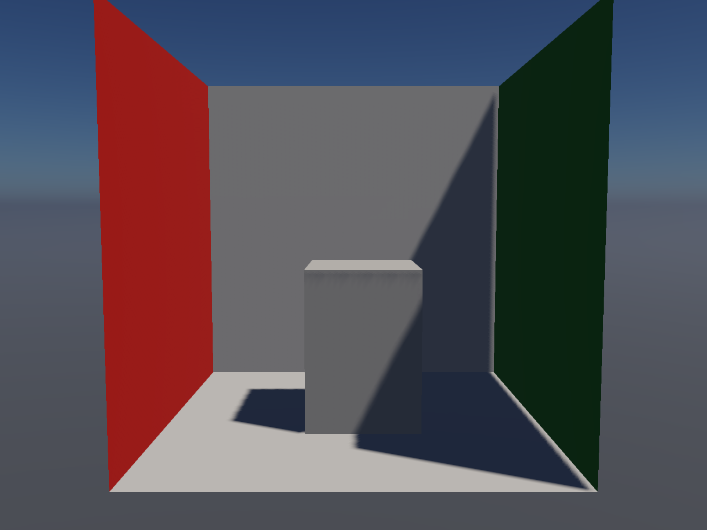

Lighting we can reuse.
The compiler prepares surface lighting once, then relights it when the sky changes. Uncertain areas keep the existing geometry queries.
Bounded prototype accepted · World GI remains off by default
Implementation and limits · Measurements and source · Original nature / AAA audit
Diffuse room

Where work is reused

Green: cached lighting. Magenta: existing queries, including edges, the block, back faces and rapid lighting changes. The compiler checks entire tiles against blockers; a few clear samples cannot establish visibility.
Cost at two image sizes
24 GPU timestamp samples per condition, ABBA order, uploads and warm-up excluded. These are short observations on Apple / Metal.
| Scene / image size | Existing GI | Surface cache | Median saved | Cache rebuild |
|---|
What this establishes
A useful compiler shortcut
Static geometry lets us move repeated visibility and lighting work out of the pixel shader. The cache retains the current diffuse transport and broad local reflection context.
Lighting stays editable
Source intensity changes reuse the geometry product. The final large-image trial reports about 0.07 ms for the combined probe and surface relight interval; this is near the timer’s granularity. Whole-frame timings include that work.
The quality change is small
The largest beauty difference is 0.005585 in a scene-linear color channel in the rough-metal case. The sealed-room cache matches the original result and passes the darkness gate. This measures agreement with existing GI, not real-world accuracy.
World rollout is still ahead
This prototype accepts simple flat receivers. Curved terrain, rocks, animated geometry and procedural normals keep the old path. It still builds the original probe field first, so compilation is more expensive.
Context: the room without GI
